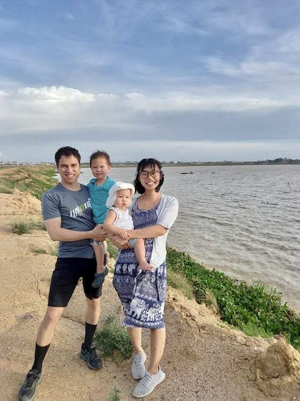
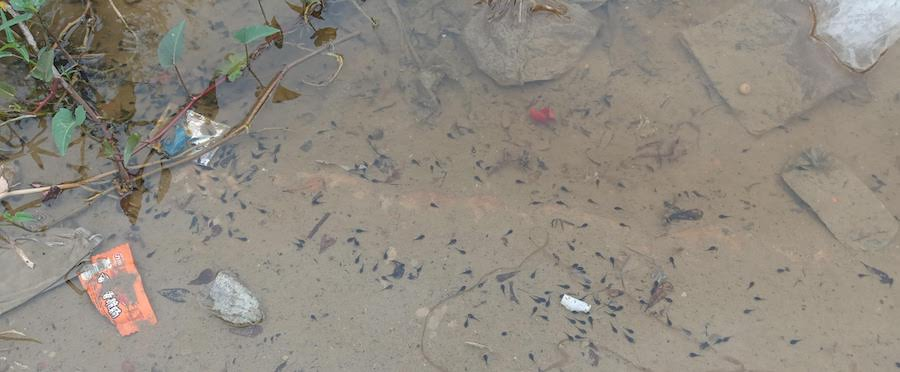
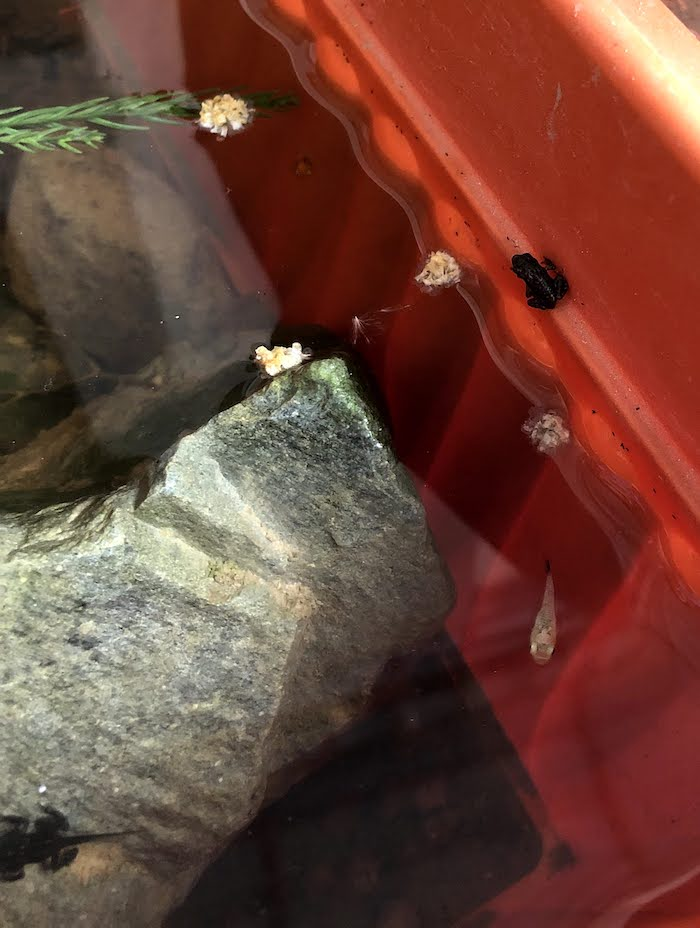
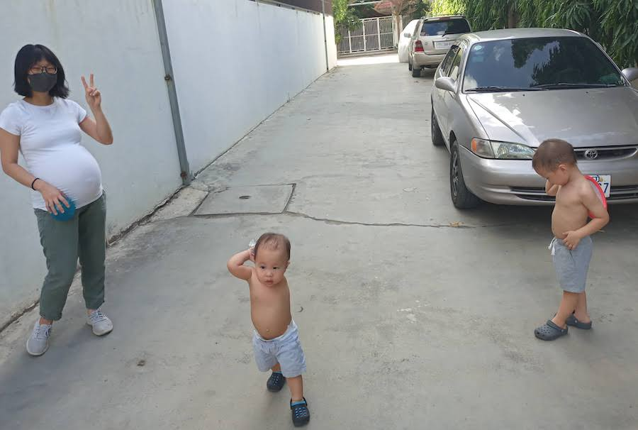
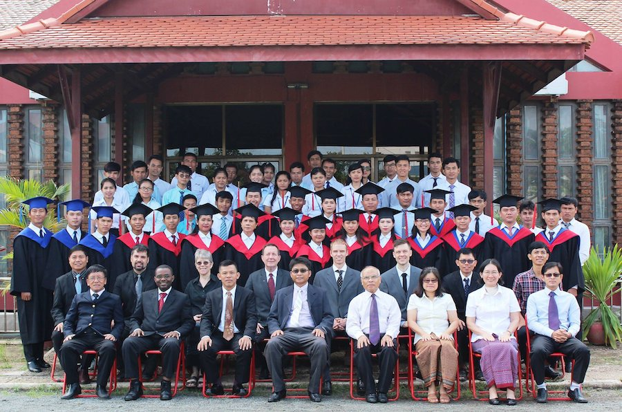
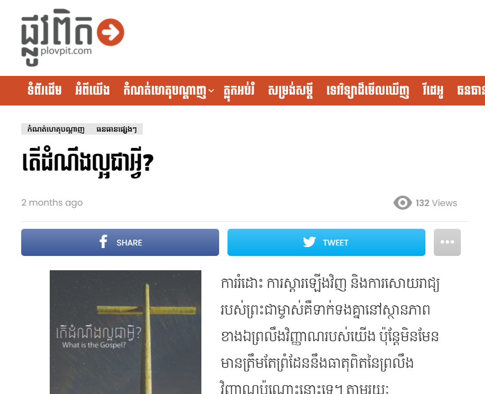
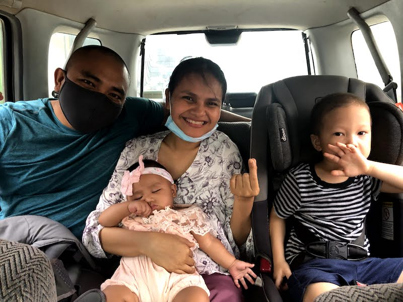
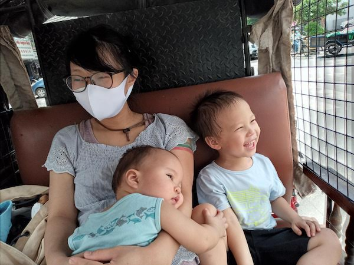
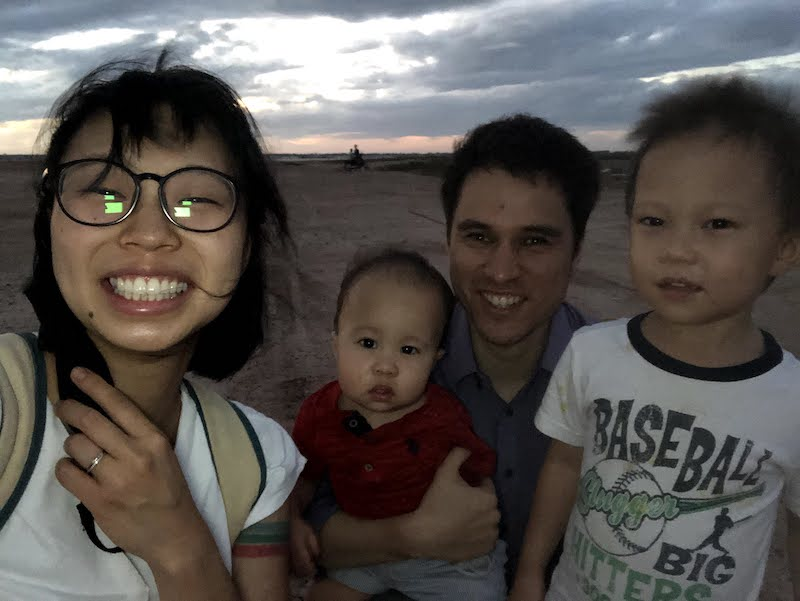
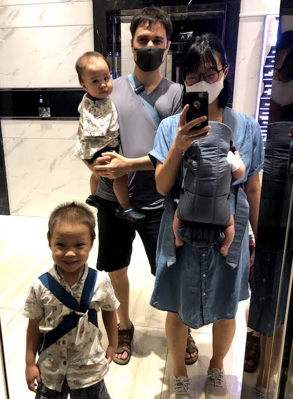

October 2021 Update
 One of our favorite spots just outside the city, one month before Anna Dear Brothers and Sisters in the Lord,
It is been a very full month since the baby was born, and as always we have a lot to be grateful for. For one thing, we have been healthy and well (besides a minor bout of food poisoning a couple weeks ago), but most of all we are grateful to be able to look back on this last season and see particular areas of growth in our lives, by God’s grace.
Some key highlights from the past several months:
Opportunities within our neighborhood
Since arriving in Cambodia this past March, we have been living in a new house in a nearby neighborhood, which has been a great fit for us in many ways. One thing particular that were grateful for is just a different general atmosphere among our neighbors. Despite the fact that we have only been here for about seven months, and all that during COVID, we have found that we’ve been able to develop more relationships and have better conversations with our neighbors here than in the old house that we were living at for 1 ½ years.
 Catching tadpoles in our neighborhood– a fun way to meet other kids!  And watching them turn into frogs! What an amazing Creator we have! We have been trying to be more intentional in just going out and walking around our block in the evenings, and it has made a huge difference. One couple in particular lives around the corner from us, and is a little bit older than we are. However, they haven’t been able to have kids yet. God has used even that though, and the wife has really taken to Jonathan in particular. Jonathan loves racing her on his little yellow bicycle, while I push Samuel in the stroller and talk to her husband.
He is very curious about Christianity, and we’ve talked about things including:
- Communion, and how it represents the sweet fellowship we have with Christ through His body and His blood;
- Christians memorial services and how we have hope that goes beyond the grave; and
- The differences between Buddhist views of family (that it is a burden that holds you back from being unattached to this world) and Christian views (that it is something good, that God created from the very beginning).
 Somehow we formed a love for “baseball” and found a spot in our neighborhood to play! This is just one example – other families have likewise started to open up the longer that we are here. Please pray for these interactions. One specific request is for opportunities to have a more focused and intentional Bible Study with our neighbors, which is currently difficult due to COVID-related concerns. Please pray though that these concerns would be held in balance with a proper sense of urgency about that which is eternal, both for our neighbors and ourselves.
Opportunities at the Phnom Penh Bible School
Ryan finished teaching his first semester at the Bible school at the beginning of August, just in time to have a little bit of a break before the baby was born. He is now preparing to teach the gospel of John starting in the end of this month. Please join us in prayer that we would be able to meet in person rather than teaching online!
Everyone involved is very concerned about how online learning has impacted the students, both in regard to their knowledge of the Word and in just regular discipleship opportunities which don’t come up when you are only teaching online. Some of the greatest opportunities come during lunch times, breaks, and after hours, but all of these are lost when teaching remotely. We are very concerned that students will not be as ready for ministry inside and outside of the church, as well as just personal growth.
 Some public and private schools are opening up throughout the country, but the Phnom Penh Bible school in particular has still not made any announcement either way.
We are trying to find good ways to invest in the Bible school even if teaching is remote as well. For example, there might be good opportunities to invest in the teacher assistants and other staff at the Bible school, who are still on campus even though the students are learning from home. These teacher assistants are former graduates of the Bible school, and are being trained and prepared to be future faculty members. Please pray for this possibility as well.
Opportunities with the Action Cambodia Translation Team
We shared about our hope to work more closely with the translation team back when we were visiting the States, and we are seeing the fruit of this already.
 During this last semester teaching at the Bible school, it has become even more clear to us how much the Cambodian church needs more biblical resources. Teachers at the Bible school have a very limited selection of books and articles to choose from when assigning reading, and students in the Bible school have a hard time finding resources for their research papers. In terms of a full-length Bible commentary, there is only one, for the book of Romans. There are some resources that have been translated into Khmer that provide a general Bible survey, but even then, sometimes these were translated from English resources that were not particularly good to begin with. This problem is only compounded when the translation quality is awkward and hard to understand.
Just to say: we are particularly grateful for the work that the guys at the translation office have been doing to prepare several articles that Ryan can use for his upcoming classes. For example, the translation team recently translated this article by D. A. Carson from the Gospel Coalition blog so that Ryan can use it in his upcoming class on John (you can find Khmer translation here). Since these are posted publicly on the Plovpit (meaning “True Way”) blog, these will be a good resource for other pastors and church members as well.
Ryan has been helping to do some editing to help ease the burden of the extra work that this puts on the translation team in order to make this possible.
Please pray for the translation team, that they would grow in love and knowledge of the Lord, and that this would overflow into their service for Him. Please also consider giving towards their work – you can learn more about the work they do here.
Opportunities with our local church (Shalom Phnom Penh Church)
 Outings with the Chheangs Due to COVID restrictions and concerns by some of the elders, the church we were attending before we left for Japan is still not meeting in person. Accordingly, we have not been as actively involved, and on Sundays have mostly just been worshiping together with another family at one of our houses, rather than watching the livestream. However, Ryan is continuing to participate in the young men’s small group, and occasionally teaches.
One thing that has been great to see is that the other members of the small group have also been taking turns to teach, and all of us have benefited. We are grateful for both their willingness to be involved as well as for our pastor’s wisdom to have encouraged the other three young men in the group to take a more active role.
Please pray however, that soon churches would be opened up in Cambodia as well. Being limited to online gathering has had a disastrous effect on the health of the church. Again, please pray that COVID-related concerns would be held in balance with a proper sense of urgency about that which is eternal and the importance of gathering as a body.
Quick Word of Thanks
Of course there is more that can be shared, but just one last thing to share is that we are so grateful for all of your support. God has protected us (both spiritually and physically) and allowed us to move forward in ministry with boldness, unhindered to carry out the ministry of the Word that brought us here in the first place.
We are also thankful in the Lord for those who are giving – I know that sometimes we might underemphasize this, but your sacrificial giving is a testimony to the love that you have for your brothers and sisters here in Cambodia, though you have never met, and to Christ’s sovereignty over all tribes, tongues and nations. We thank God for this reminder for us and demonstration of this fundamental gospel truth.
For His glory,
Ryan and Rebekah
  